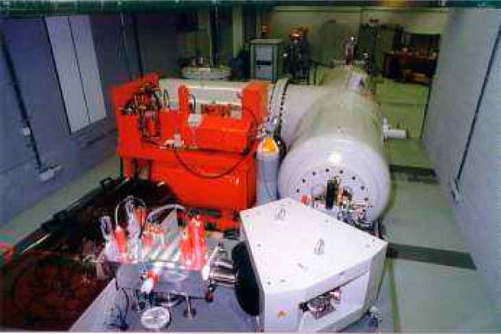
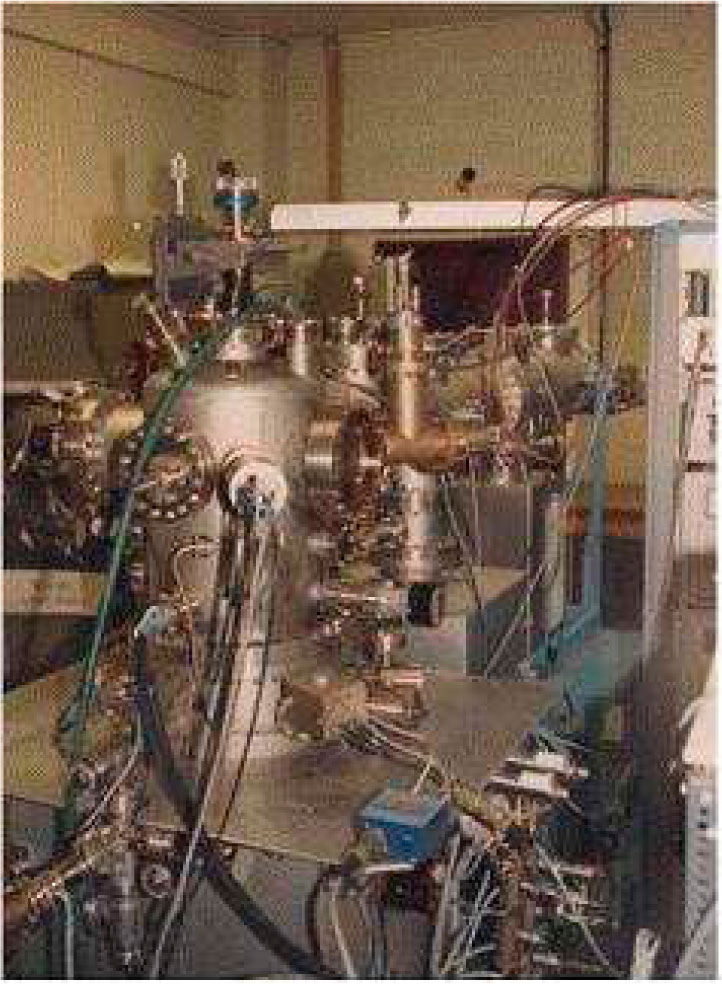
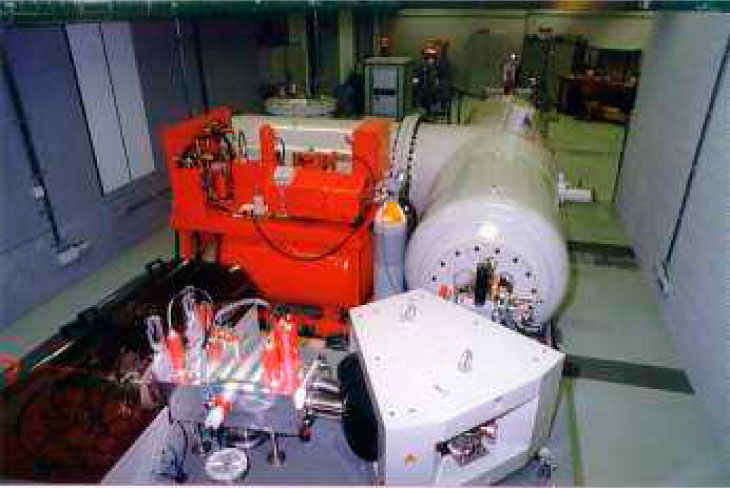
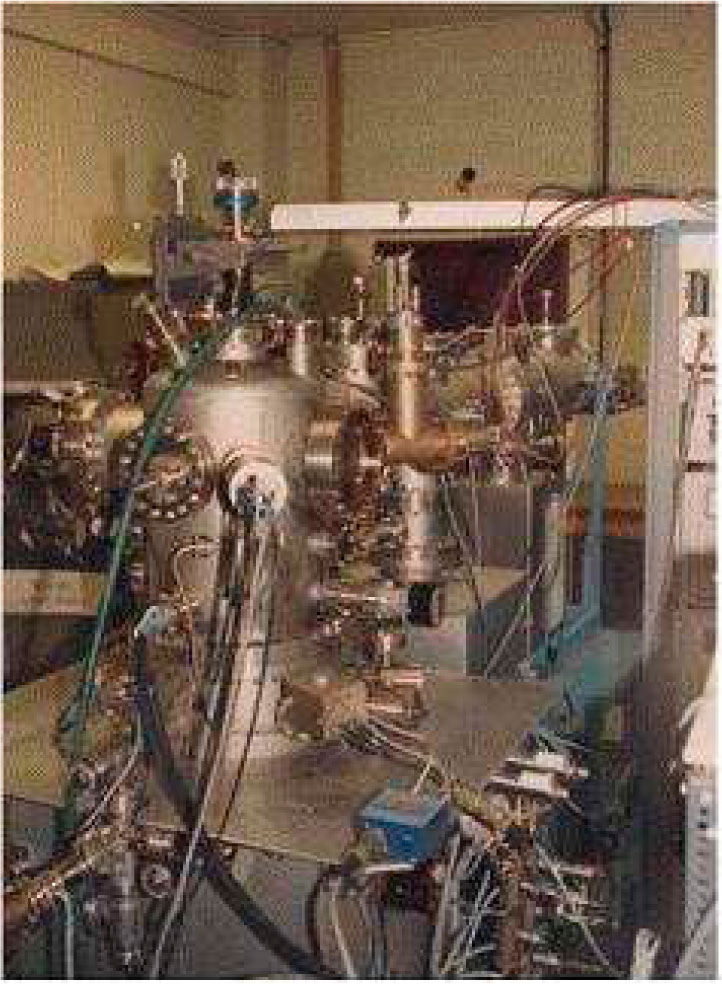

The FUNDP's physical department is today focussed on materials, different types of irradiation and their interaction
- University, member of the Universitary Academy of Louvain
- 6 faculties, amongst which the faculty of "sciences"
- Specific ITER interest:
- Material analysis (light elements such as He, Li, Tritium; quantitative and in depth analysis)
- ionic implantation of light elements
- (low energy) particle acceleration using a Linear Accelerator for Analysis and Implantation of Solids
- material deposition by cold plasma (for metals and polymers)
- Collision reactions analysis (for C, O and other components)
 



Contact Person
Mr Guy Trewagne
LARN - Physics Department
email: guy.terwagne@fundp.ac.be
tel: +32 81 725478
fax: +32 81 725474
www.fundp.ac.be/facultes/
sciences/departements/physique/
recherche/centres/larn
61, rue de Bruxelles
B-5000 Namur
Belgium